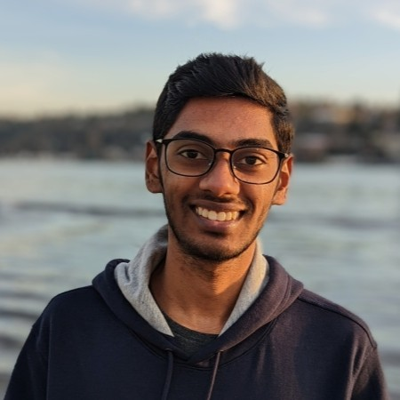

Srivatsan Balaji
Research Collaborator/Contributor
Nimble Surgical
Interests: Soft and Materials Robotics
I am currently a Research Contributor at Nimble Surgical, working on developing metamaterial-based advanced guide catheters. Prior to this, I was a Faculty Research Assistant in the Intelligent Machines and Materials Lab, part of Collaborative Robotics and Intelligent Systems (CoRIS) Institute at Oregon State University. I developed hardware for integrating flexible electronics to underwater robots. My work sits at the intersection of mechanical design, robotics, and materials.
Outside of work, I am a virtual pilot and hobbyist photographer.
My Work
Design
SolidWorks, Autodesk Fusion 360 — Design and development of soft robotic systems & end effectors
Fabrication
Fused Deposition Modeling, Stereolithography, Material jetting, Silicone casting
Materials
Mechanical analysis & characterization
Computation
Python, MATLAB — Data processing, analysis, and feedback
Advanced Hardware
Integrated hardware for underwater robotic systems